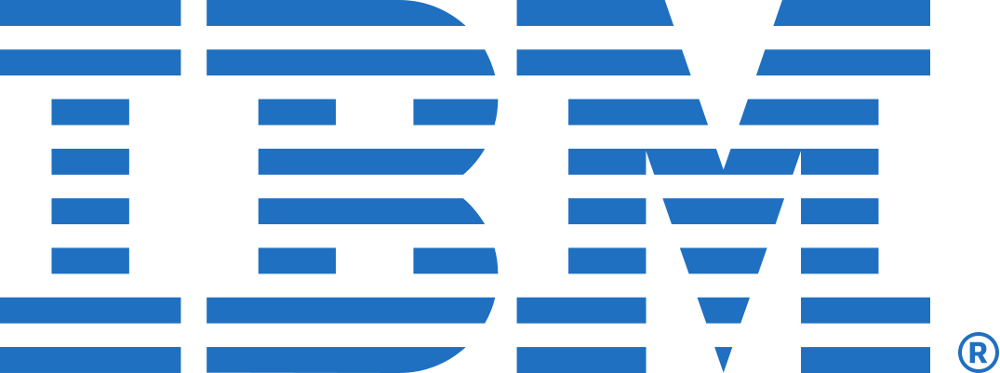

Ranglister Software, cloud & internet IBM

IBM
Et blik på de samme fund, ikke en ny score. Sådan virker det
Kort fortalt
IBM får 71: prisen ligger midt i egen historik, men en del af væksten er købt, og opkøbene er delvis betalt med lån, så nettogælden er steget til 56,1 mia. dollar. Konsulentdelen står stille, og aktien er faldet 22 % på et år på frygt for, at AI-værktøjer presser IBM's gamle kerneforretning. Staten ejer ingen IBM-aktier, men har fået en minoritetsandel i datterselskabet Anderon mod op til 1 mia. dollar i støtte; beløbet er lille for IBM, og staten kan opsige aftalen. Til gengæld vokser software med faste indtægter 8 %, og pengestrømmen dækker udbyttet med god margin. Hold øje med, om bruttomarginen skuffer igen.
En stærk score: modellen fandt få alvorlige problemer, men analytikerne ser begrænset opside herfra.
Største fradrag
- Multipler mod egen historik og peers−6
- Vækstens kvalitet−4
- Fremtidens segment (konsulent og automation)−3
Styrker
- Tilbagevendende software+2
- Pengestrøm og hævet FCF-mål+2
- Kvanteposition+1
Sådan er scoren bygget op
Fra 100 til 71, trin for trin: point trækkes fra for forretningen, prisen og revnerne, lægges til for dokumenterede styrker, og så følger tre datajusteringer.
Hold musen over et trin eller vælg det for at se, hvad der drev det. Trin med fund åbner dem nedenfor.
Nøgletal
Pr. 23 nov. 2026. Analytikernes kursmål er ofte optimistiske; læs opsiden som et fingerpeg, ikke en prognose.
- Pris
- 233.00 USD
- Analytikernes mediankursmål
- 265.00 USD
- Opside til median
- +13.7%
- Analytikere
- 25
- Kursmålsinterval
- 174.00 – 300.00 USD
- 52-ugers ændring
- −22%
- P/E (historisk)
- 19.9
- Forward P/E
- 17.8
- PEG
- 2.69
Fund
Hvert fradrag og hvert plus med sin kilde. Åbn et trin for at læse dem.
Forretning
Bliver virksomheden stærkere, ikke bare større? · 3 fund−10 af −30
- −4Vækstens kvalitetOmsætningen steg 5 % (6 % i faste valutaer) til 17,1 mia. $ i Q3, men en del er købt: Data voksede 19 % med Confluent, og ca. en fjerdedel af softwarevæksten var store licensaftaler, der var skredet fra Q2. Helårsguidancen på 4–5 % i faste valutaer blev ikke hævet, og den organiske vækst i 2021–24 var kun 1,4–5,5 % om året.
- −3Fremtidens segment (konsulent og automation)Consulting står stille: 5,3 mia. $ i Q3 (0 %, +2 % i faste valutaer) efter 0 % i Q2, og Automation faldt 3 %. Konsulentdelen (ca. 30 % af omsætningen) er den del, AI-kodeværktøjer presser mest.
- −3KapitalallokeringOpkøbene (HashiCorp, Confluent) er delvis lånefinansieret: nettogælden er 56,1 mia. $ mod 43,8 mia. $ ultimo 2024, og aktietallet stiger stadig (+0,7 % på et år) trods tilbagekøb, fordi aktielønnen er fordoblet siden 2021.
Pris
Dagens multipler mod selskabets egen historik og dets sammenlignelige selskaber. · 1 fund−6 af −35
- −6Multipler mod egen historik og peersForward P/E 17,8 mod 12,8–24,5 i 2021–25 (median 16,6), P/FCF 15,0 mod 11,2–22,9 og EV/EBITDA 16,6 mod 15,1–20,3 – midt i intervallet. Billigere end software-peers (Microsoft forward 23, SAP 23), men det er rimeligt med 4–5 % vækst og 56 mia. $ i nettogæld.
Revner
Cash flow, kunder, gæld, insidere, guidance og det, der ligger bag hovedtallene. · 5 fund−10 af −35
- −2Guidance og bruttomarginOmsætningsguidancen blev i juli sænket til 4–5 % fra over 5 % og er ikke løftet igen efter Q3. Bruttomarginen faldt i Q3 (operationelt 58,5 %, −0,2 point; GAAP 56,8 % mod 57,3 %) og skuffede analytikerne, og aktien faldt ca. 4 % efter regnskabet.
- −3Konkurrence (AI-disruption)Aktien er −21,7 % på 52 uger og handler under 200-dages snittet (233 $ mod 245 $). Den blev nedvurderet på frygt for, at AI-kodeværktøjer kan modernisere COBOL-systemer og omgå IBM's mainframe- og konsulentbase; IBM Z faldt 20 % i Q3. Risikoen er strukturel.
- −3Gæld og likviditetKontanter, bundne midler og værdipapirer faldt 3,4 mia. $ til 11,1 mia. $ i 2026, mens gælden steg 2,6 mia. $ til 63,8 mia. $ (heraf 12,7 mia. $ i IBM Financing). Gæld/EBITDA er 3,7 og current ratio 0,85, og IBM har lånt yderligere 108,8 mia. ¥ i november. Ratingen er stabil (A-/A3/A-).
- −1Eksekvering (kvante-roadmap)På Quantum Developer Conference (11.–13/11) viste IBM Nighthawk r3 (520 qubits, 2027) og et koblet 1.040-qubit-system, men 2026-målet om et fejltolerant modul (Kookaburra) blev ikke bekræftet opfyldt. Starling (2029) er fortsat kun et mål.
- −1Statens ejerandel i Anderon (politisk risiko)Handelsministeriet fik en minoritetsandel i datterselskabet Anderon LLC (ikke i IBM) mod 650 mio. $ ved closing og 350 mio. $ mod milepæle; aftalen giver staten ret til at opsige 'for convenience' og tilbagebetalingskrav. Beløbet er under 1,5 % af IBM's omsætning, så finansieringen ændrer ikke meget, mens risikoen er politisk: Demokraterne overtager Kongressen i januar 2027 og har varslet høringer om statens selskabsposter og CHIPS-hjemlen.
Plus
Kun dokumenterede styrker. · 3 fund+5 af +15
- +2Tilbagevendende softwareSoftware voksede 8 % (9 % i faste valutaer) til 7,8 mia. $ i Q3: Red Hat +11 %, Data +19 % og Transaction Processing +9 %. Bruttomarginen er steget fra 54,9 % (2021) til 58,0 % og driftsmarginen fra 9,7 % til 18,4 % TTM.
- +2Pengestrøm og hævet FCF-målFCF 14,7 mia. $ TTM og 7,8 mia. $ år til dato (+0,6 mia. $) dækker udbyttet (ca. 6,3 mia. $) med god margin, og FCF-målet for 2026 blev hævet til over 1 mia. $ mere end i 2025.
- +1KvantepositionIBM har den mest konkrete fejltolerante roadmap blandt de store (qLDPC-koder med op til 90 % færre fysiske qubits, Nighthawk r3 i 2027, Starling med 200 logiske qubits i 2029), og kumuleret kvante-'book of business' er knap 1 mia. $. Statens medfinansiering af Anderon er vurderet under T3 og giver ikke point her.
Forbehold
Det, scoren ikke fanger, eller hvor dataene er svage.
Også i Software, cloud & internet
De højeste scorer i samme branche.